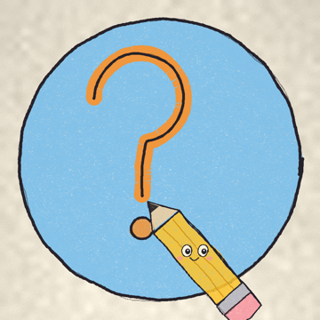

Termos de Serviço
Última atualização: 7 de novembro de 2026
1. O que é o aplicativo
O aplicativo rabisco-curioso é uma ferramenta interna, de uso exclusivo do dono do canal Rabisco Curioso, para publicar vídeos nas contas do próprio canal no YouTube, no Instagram e no Facebook.
2. Uso
O aplicativo não é oferecido ao público. Ao usá-lo, o dono do canal concorda em cumprir os termos das plataformas envolvidas, incluindo os Termos de Serviço do YouTube e os Termos da Meta.
3. Conteúdo
Os vídeos publicados são produzidos pelo Rabisco Curioso. As curiosidades são pesquisadas em fontes confiáveis, citadas na descrição de cada vídeo.
4. Garantias
O aplicativo é fornecido "no estado em que se encontra", sem garantias de funcionamento ininterrupto.
5. Contato
Envie uma mensagem para @rabisco.curioso no Instagram.